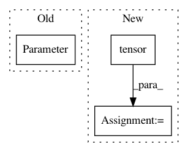

020d3d6dfa1bbcc13f7f7f0a833f57bb2cc8ef9d,gpytorch/kernels/spectral_mixture_kernel.py,SpectralMixtureKernel,__init__,#SpectralMixtureKernel#Any#Any#Any#Any#Any#Any#,12
Before Change
super(SpectralMixtureKernel, self).__init__(active_dims=active_dims)
self.register_parameter(
name="log_mixture_weights",
parameter=torch.nn.Parameter(torch.zeros(self.n_mixtures)),
prior=log_mixture_weight_prior,
)
self.register_parameter(
After Change
self.n_dims = n_dims
logger.warning("Priors not implemented for SpectralMixtureKernel")
super(SpectralMixtureKernel, self).__init__(active_dims=active_dims)
self.register_parameter(
name="log_mixture_weights",
parameter=torch.nn.Parameter(torch.zeros(self.n_mixtures)),
In pattern: SUPERPATTERN
Frequency: 3
Non-data size: 3
Instances
Project Name: cornellius-gp/gpytorch
Commit Name: 020d3d6dfa1bbcc13f7f7f0a833f57bb2cc8ef9d
Time: 2018-07-03
Author: balandat@fb.com
File Name: gpytorch/kernels/spectral_mixture_kernel.py
Class Name: SpectralMixtureKernel
Method Name: __init__
Project Name: SPFlow/SPFlow
Commit Name: a25998e30f74d0462e4bf6c0efd8ea20a1cb8d6f
Time: 2020-03-10
Author: steven.lang.mz@gmail.com
File Name: src/spn/experiments/RandomSPNs_layerwise/rat_spn.py
Class Name: RatNormal
Method Name: __init__
Project Name: rusty1s/pytorch_geometric
Commit Name: 704f1ab10f28a9fe3ae76e4cf1eb6ea946db01cd
Time: 2018-05-23
Author: matthias.fey@tu-dortmund.de
File Name: torch_geometric/nn/modules/spline_conv.py
Class Name: SplineConv
Method Name: __init__